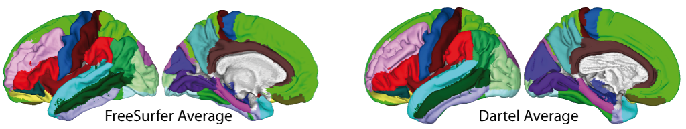

Surface tools
-
Display Surface
Function to render surface data and save images that can be also called from command line.
See help cat_surf_display for further information.
-
Extract Additional Surface Parameter
This function allows to estimate further folding measures such as curvature (Gaser et al. 2006), fractal dimension (Yotter et al. 2012), and sulcal depth (VanEssen et al. 2006). The data will be stored as GIFTI surfaces and have to be resampled and smoothed before they can be analyzed.
-
Map Volume (Native Space) to Individual Surface
Map volume data from native space to individual surface.
-
Map Volume (Template Space) to Template Surface
Map spatially normalized data to template surface. The template surface was generated by CAT12 surface processing (Dahnke et al. 2013) of the average of 555 Dartel-normalized images of the IXI database that were also used to create the IXI Dartel template.
-
Resample & Smooth Surfaces Parameter
In order to analyze surface parameters all data have to be resampled into template space and the resampled data have to be finally smoothed. Resampling is done using the warped coordinates of the respampled sphere.
-
Surface Calculator
Mathematical operations for surface data (textures) that works similar to spm_imcalc.
-
Surface Calculator (Subject-wise)
Mathematical operations for surface data (textures) that allow in contrast to the Surface Calculator the definition of datasets for multiple subjects.
-
Display Surface Results
Visualization of results for both hemispheres with many additional functions to extract ROI information.
References
-
Gaser et al. 2006
Gaser, C., Luders, E., Thompson, P. M., Lee, A. D., Dutton, R. A., Geaga, J. A., et al. (2006). Increased local gyrification mapped in Williams syndrome. NeuroImage, 33(1), 46-54.
-
Yotter et al. 2012
Yotter RA, Nenadic I, Ziegler G, Thompson PM, Gaser C. Local cortical surface complexity maps from spherical harmonic reconstructions. NeuroImage, 2012, 56(3), 961-973.
-
VanEssen et al. 2006
Van Essen DC, Dierker D, Snyder AZ, Raichle ME, Reiss AL, Korenberg J. Symmetry of cortical folding abnormalities in Williams syndrome revealed by surface-based analyses. The Journal of Neuroscience: the Official Journal of the Society for Neuroscience, 26(20), 5470-5483.
-
Dahnke et al. 2013
Dahnke R, Yotter RA, Gaser C. Cortical thickness and central surface estimation. NeuroImage, 65, 336-348.